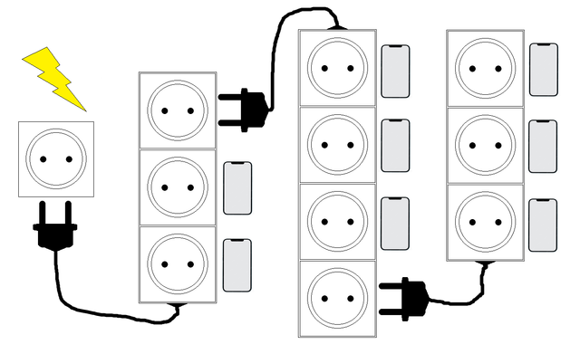

Last school year Nodir participated in \(N\) olympiads and won one extension cord (power strip) in each of them. The \(i\)-th extension cord has \(a[i]\) sockets.
Nodir also has an unlimited number of phones. Charging each phone requires one socket, but Nodir's home has only a single power source (wall outlet).
Connect the extension cords to each other in such a way that the number of power sources is maximized and as many phones as possible can be charged.

The first line contains the number \(N\) – the total number of extension cords.
The second line contains \(a[1], a[2], \dots, a[N]\) – the number of sockets on each extension cord.
Print a single line – the maximum number of phones that can be charged.
For example, let \(N = 3\) and \(a = [3, 3, 4]\).
If Nodir connects the extension cords in the order \([3, 4, 3]\), he can charge \(8\) phones.
3 3 3 4
8